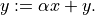
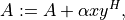

The BLAS Interface
The cvxopt.blas module provides an interface to the double-precision
real and complex Basic Linear Algebra Subprograms (BLAS). The names and
calling sequences of the Python functions in the interface closely match
the corresponding Fortran BLAS routines (described in the references below)
and their functionality is exactly the same. Many of the operations
performed by the BLAS routines can be implemented in a more straightforward
way by using the matrix arithmetic of the section Arithmetic Operations,
combined with the slicing and indexing of the section Indexing and Slicing.
As an example, C = A * B gives the same result as the BLAS call
gemm(A, B, C). The BLAS interface offers two advantages. First,
some of the functions it includes are not easily implemented using the
basic matrix arithmetic. For example, BLAS includes functions that
efficiently exploit symmetry or triangular matrix structure. Second, there
is a performance difference that can be significant for large matrices.
Although our implementation of the basic matrix arithmetic makes internal
calls to BLAS, it also often requires creating temporary matrices to store
intermediate results. The BLAS functions on the other hand always operate
directly on their matrix arguments and never require any copying to
temporary matrices. Thus they can be viewed as generalizations of the
in-place matrix addition and scalar multiplication of the section
Arithmetic Operations to more complicated operations.
See also
C. L. Lawson, R. J. Hanson, D. R. Kincaid, F. T. Krogh, Basic Linear Algebra Subprograms for Fortran Use, ACM Transactions on Mathematical Software, 5(3), 309-323, 1975.
J. J. Dongarra, J. Du Croz, S. Hammarling, R. J. Hanson, An Extended Set of Fortran Basic Linear Algebra Subprograms, ACM Transactions on Mathematical Software, 14(1), 1-17, 1988.
J. J. Dongarra, J. Du Croz, S. Hammarling, I. Duff, A Set of Level 3 Basic Linear Algebra Subprograms, ACM Transactions on Mathematical Software, 16(1), 1-17, 1990.
Matrix Classes
The BLAS exploit several types of matrix structure: symmetric, Hermitian,
triangular, and banded. We represent all these matrix classes by dense
real or complex matrix objects, with additional
arguments that specify the structure.
- Vector
A real or complex
 -vector is represented by a
-vector is represented by a matrixof type'd'or'z'and length, with the
entries of the vector stored in column-major order.- General matrix
A general real or complex
 by matrix is represented
by a real or complex
by matrix is represented
by a real or complex matrixof size (, ).- Symmetric matrix
A real or complex symmetric matrix of order
is represented
by a real or complex matrixof size (, ),
and a character argument uplowith two possible values:'L'and'U'. Ifuplois'L', the lower triangular part of the symmetric matrix is stored; ifuplois'U', the upper triangular part is stored. A squarematrixXof size (, ) can therefore be
used to represent the symmetric matrices![\left[\begin{array}{ccccc}
X[0,0] & X[1,0] & X[2,0] & \cdots & X[n-1,0] \\
X[1,0] & X[1,1] & X[2,1] & \cdots & X[n-1,1] \\
X[2,0] & X[2,1] & X[2,2] & \cdots & X[n-1,2] \\
\vdots & \vdots & \vdots & \ddots & \vdots \\
X[n-1,0] & X[n-1,1] & X[n-1,2] & \cdots & X[n-1,n-1]
\end{array}\right] \quad \mbox{(uplo = 'L')},
\left[\begin{array}{ccccc}
X[0,0] & X[0,1] & X[0,2] & \cdots & X[0,n-1] \\
X[0,1] & X[1,1] & X[1,2] & \cdots & X[1,n-1] \\
X[0,2] & X[1,2] & X[2,2] & \cdots & X[2,n-1] \\
\vdots & \vdots & \vdots & \ddots & \vdots \\
X[0,n-1] & X[1,n-1] & X[2,n-1] & \cdots & X[n-1,n-1]
\end{array}\right] \quad \mbox{(uplo = U')}.](_images/math/3f12bcd60dcbf296614984241c025a909a803e1e.png)
- Complex Hermitian matrix
A complex Hermitian matrix of order
is represented by a
matrixof type'z'and size (, ),
and a character argument uplowith the same meaning as for symmetric matrices. A complexmatrixXof size (, ) can represent the Hermitian matrices![\left[\begin{array}{ccccc}
\Re X[0,0] & \bar X[1,0] & \bar X[2,0] & \cdots &
\bar X[n-1,0] \\
X[1,0] & \Re X[1,1] & \bar X[2,1] & \cdots &
\bar X[n-1,1] \\
X[2,0] & X[2,1] & \Re X[2,2] & \cdots & \bar X[n-1,2] \\
\vdots & \vdots & \vdots & \ddots & \vdots \\
X[n-1,0] & X[n-1,1] & X[n-1,2] & \cdots & \Re X[n-1,n-1]
\end{array}\right] \quad \mbox{(uplo = 'L')},
\left[\begin{array}{ccccc}
\Re X[0,0] & X[0,1] & X[0,2] & \cdots & X[0,n-1] \\
\bar X[0,1] & \Re X[1,1] & X[1,2] & \cdots & X[1,n-1] \\
\bar X[0,2] & \bar X[1,2] & \Re X[2,2] & \cdots &
X[2,n-1] \\
\vdots & \vdots & \vdots & \ddots & \vdots \\
\bar X[0,n-1] & \bar X[1,n-1] & \bar X[2,n-1] & \cdots &
\Re X[n-1,n-1]
\end{array}\right] \quad \mbox{(uplo = 'U')}.](_images/math/ab466a647f375d548d3b12c0c1ecb79704cef8d0.png)
- Triangular matrix
A real or complex triangular matrix of order
is represented
by a real or complex matrixof size (, ),
and two character arguments: an argument uplowith possible values'L'and'U'to distinguish between lower and upper triangular matrices, and an argumentdiagwith possible values'U'and'N'to distinguish between unit and non-unit triangular matrices. A squarematrixXof size (, ) can represent the triangular matrices![\left[\begin{array}{ccccc}
X[0,0] & 0 & 0 & \cdots & 0 \\
X[1,0] & X[1,1] & 0 & \cdots & 0 \\
X[2,0] & X[2,1] & X[2,2] & \cdots & 0 \\
\vdots & \vdots & \vdots & \ddots & \vdots \\
X[n-1,0] & X[n-1,1] & X[n-1,2] & \cdots & X[n-1,n-1]
\end{array}\right] \quad \mbox{(uplo = 'L', diag = 'N')},
\left[\begin{array}{ccccc}
1 & 0 & 0 & \cdots & 0 \\
X[1,0] & 1 & 0 & \cdots & 0 \\
X[2,0] & X[2,1] & 1 & \cdots & 0 \\
\vdots & \vdots & \vdots & \ddots & \vdots \\
X[n-1,0] & X[n-1,1] & X[n-1,2] & \cdots & 1
\end{array}\right] \quad \mbox{(uplo = 'L', diag = 'U')},
\left[\begin{array}{ccccc}
X[0,0] & X[0,1] & X[0,2] & \cdots & X[0,n-1] \\
0 & X[1,1] & X[1,2] & \cdots & X[1,n-1] \\
0 & 0 & X[2,2] & \cdots & X[2,n-1] \\
\vdots & \vdots & \vdots & \ddots & \vdots \\
0 & 0 & 0 & \cdots & X[n-1,n-1]
\end{array}\right] \quad \mbox{(uplo = 'U', diag = 'N')},
\left[\begin{array}{ccccc}
1 & X[0,1] & X[0,2] & \cdots & X[0,n-1] \\
0 & 1 & X[1,2] & \cdots & X[1,n-1] \\
0 & 0 & 1 & \cdots & X[2,n-1] \\
\vdots & \vdots & \vdots & \ddots & \vdots \\
0 & 0 & 0 & \cdots & 1
\end{array}\right] \quad \mbox{(uplo = 'U', diag = 'U')}.](_images/math/6669c8a566ba908085156b5c4a539af53616f383.png)
- General band matrix
A general real or complex
by band matrix with
 subdiagonals and superdiagonals is represented
by a real or complex
subdiagonals and superdiagonals is represented
by a real or complex matrixXof size ( , ), and the two integers and
. The diagonals of the band matrix are stored in the rows
of
, ), and the two integers and
. The diagonals of the band matrix are stored in the rows
of X, starting at the top diagonal, and shifted horizontally so that the entries of column of the band matrix are stored in column
of
of the band matrix are stored in column
of X. AmatrixXof size (, ) therefore represents the
by band matrix![\left[ \begin{array}{ccccccc}
X[k_u,0] & X[k_u-1,1] & X[k_u-2,2] & \cdots &
X[0,k_u] & 0 & \cdots \\
X[k_u+1,0] & X[k_u,1] & X[k_u-1,2] & \cdots &
X[1,k_u] & X[0,k_u+1] & \cdots \\
X[k_u+2,0] & X[k_u+1,1] & X[k_u,2] & \cdots &
X[2,k_u] & X[1,k_u+1] & \cdots \\
\vdots & \vdots & \vdots & \ddots &
\vdots & \vdots & \ddots \\
X[k_u+k_l,0] & X[k_u+k_l-1,1] & X[k_u+k_l-2,2] & \cdots &
& & \\
0 & X[k_u+k_l,1] & X[k_u+k_l-1,2] & \cdots &
& & \\
\vdots & \vdots & \vdots & \ddots &
& &
\end{array}\right].](_images/math/f86c7a0b45da8cc7f4a00c20bf654b3df94ff06a.png)
- Symmetric band matrix
A real or complex symmetric band matrix of order
with
subdiagonals, is represented by a real or complex matrix Xof size ( , ), and an argument
, ), and an argument uploto indicate whether the subdiagonals (uplois'L') or superdiagonals (uplois'U') are stored. The diagonals are
stored as rows of X, starting at the top diagonal (i.e., the main diagonal ifuplois'L', or the-th superdiagonal
if uplois'U') and shifted horizontally so that the entries of the-th column of the band matrix are stored in
column of X. AmatrixXof size (, ) can therefore represent the band matrices![\left[ \begin{array}{ccccccc}
X[0,0] & X[1,0] & X[2,0] & \cdots & X[k,0] & 0
& \cdots \\
X[1,0] & X[0,1] & X[1,1] & \cdots & X[k-1,1] & X[k,1]
& \cdots \\
X[2,0] & X[1,1] & X[0,2] & \cdots & X[k-2,2] & X[k-1,2]
& \cdots \\
\vdots & \vdots & \vdots & \ddots & \vdots & \vdots
& \ddots \\
X[k,0] & X[k-1,1] & X[k-2,2] & \cdots & & & \\
0 & X[k,1] & X[k-1,2] & \cdots & & & \\
\vdots & \vdots & \vdots & \ddots & & &
\end{array}\right] \quad \mbox{(uplo = 'L')},
\left[ \begin{array}{ccccccc}
X[k,0] & X[k-1,1] & X[k-2,2] & \cdots & X[0,k] & 0
& \cdots \\
X[k-1,1] & X[k,1] & X[k-1,2] & \cdots & X[1,k] & X[0,k+1]
& \cdots \\
X[k-2,2] & X[k-1,2] & X[k,2] & \cdots & X[2,k] & X[1,k+1]
& \cdots \\
\vdots & \vdots & \vdots & \ddots & \vdots & \vdots
& \ddots \\
X[0,k] & X[1,k] & X[2,k] & \cdots & & & \\
0 & X[0,k+1] & X[1,k+1] & \cdots & & & \\
\vdots & \vdots & \vdots & \ddots & & &
\end{array}\right] \quad \mbox{(uplo='U')}.](_images/math/80e21626c375d52667de27ff84715270afb8ca70.png)
- Hermitian band matrix
A complex Hermitian band matrix of order
with
subdiagonals is represented by a complex matrix of size
(, ) and an argument uplo, with the same meaning as for symmetric band matrices. AmatrixXof size (, ) can represent the band matrices![\left[ \begin{array}{ccccccc}
\Re X[0,0] & \bar X[1,0] & \bar X[2,0] & \cdots &
\bar X[k,0] & 0 & \cdots \\
X[1,0] & \Re X[0,1] & \bar X[1,1] & \cdots &
\bar X[k-1,1] & \bar X[k,1] & \cdots \\
X[2,0] & X[1,1] & \Re X[0,2] & \cdots &
\bar X[k-2,2] & \bar X[k-1,2] & \cdots \\
\vdots & \vdots & \vdots & \ddots & \vdots
& \vdots & \ddots \\
X[k,0] & X[k-1,1] & X[k-2,2] & \cdots & & & \\
0 & X[k,1] & X[k-1,2] & \cdots & & & \\
\vdots & \vdots & \vdots & \ddots & & &
\end{array}\right] \quad \mbox{(uplo = 'L')},
\left[ \begin{array}{ccccccc}
\Re X[k,0] & X[k-1,1] & X[k-2,2] & \cdots & X[0,k] &
0 & \cdots \\
\bar X[k-1,1] & \Re X[k,1] & X[k-1,2] & \cdots &
X[1,k] & X[0,k+1] & \cdots \\
\bar X[k-2,2] & \bar X[k-1,2] & \Re X[k,2] & \cdots &
X[2,k] & X[1,k+1] & \cdots \\
\vdots & \vdots & \vdots & \ddots & \vdots &
\vdots & \ddots \\
\bar X[0,k] & \bar X[1,k] & \bar X[2,k] & \cdots &
& & \\
0 & \bar X[0,k+1] & \bar X[1,k+1] & \cdots & & & \\
\vdots & \vdots & \vdots & \ddots & & &
\end{array}\right] \quad \mbox{(uplo='U')}.](_images/math/0667e780fc9b2d0fad01d14184553aba1cd6b81b.png)
- Triangular band matrix
A triangular band matrix of order
with subdiagonals
or superdiagonals is represented by a real complex matrix of size
(, ) and two character arguments uploanddiag, with similar conventions as for symmetric band matrices. AmatrixXof size (, ) can represent
the band matrices![\left[ \begin{array}{cccc}
X[0,0] & 0 & 0 & \cdots \\
X[1,0] & X[0,1] & 0 & \cdots \\
X[2,0] & X[1,1] & X[0,2] & \cdots \\
\vdots & \vdots & \vdots & \ddots \\
X[k,0] & X[k-1,1] & X[k-2,2] & \cdots \\
0 & X[k,1] & X[k-1,1] & \cdots \\
\vdots & \vdots & \vdots & \ddots
\end{array}\right] \quad \mbox{(uplo = 'L', diag = 'N')},
\left[ \begin{array}{cccc}
1 & 0 & 0 & \cdots \\
X[1,0] & 1 & 0 & \cdots \\
X[2,0] & X[1,1] & 1 & \cdots \\
\vdots & \vdots & \vdots & \ddots \\
X[k,0] & X[k-1,1] & X[k-2,2] & \cdots \\
0 & X[k,1] & X[k-1,2] & \cdots \\
\vdots & \vdots & \vdots & \ddots
\end{array}\right] \quad \mbox{(uplo = 'L', diag = 'U')},
\left[ \begin{array}{ccccccc}
X[k,0] & X[k-1,1] & X[k-2,3] & \cdots & X[0,k] &
0 & \cdots\\
0 & X[k,1] & X[k-1,2] & \cdots & X[1,k] &
X[0,k+1] & \cdots \\
0 & 0 & X[k,2] & \cdots & X[2,k] &
X[1,k+1] & \cdots \\
\vdots & \vdots & \vdots & \ddots & \vdots &
\vdots & \ddots
\end{array}\right] \quad \mbox{(uplo = 'U', diag = 'N')},
\left[ \begin{array}{ccccccc}
1 & X[k-1,1] & X[k-2,3] & \cdots & X[0,k] &
0 & \cdots\\
0 & 1 & X[k-1,2] & \cdots & X[1,k] &
X[0,k+1] & \cdots \\
0 & 0 & 1 & \cdots & X[2,k] &
X[1,k+1] & \cdots \\
\vdots & \vdots & \vdots & \ddots & \vdots &
\vdots & \ddots
\end{array}\right] \quad \mbox{(uplo = 'U', diag = 'U')}.](_images/math/f59b4bcd76f97da1f13ba87bc76bf52b442b4381.png)
When discussing BLAS functions in the following sections we will omit several less important optional arguments that can be used to select submatrices for in-place operations. The complete specification is documented in the docstrings of the source code, and can be viewed with the pydoc help program.
Level 1 BLAS
The level 1 functions implement vector operations.
- cvxopt.blas.scal(alpha, x)
Scales a vector by a constant:
If
xis a realmatrix, the scalar argumentalphamust be a Python integer or float. Ifxis complex,alphacan be an integer, float, or complex.
- cvxopt.blas.nrm2(x)
Euclidean norm of a vector: returns
- cvxopt.blas.asum(x)
1-Norm of a vector: returns
- cvxopt.blas.iamax(x)
Returns

If more than one coefficient achieves the maximum, the index of the first
is returned.
- cvxopt.blas.swap(x, y)
Interchanges two vectors:
xandyare matrices of the same type ('d'or'z').
- cvxopt.blas.copy(x, y)
Copies a vector to another vector:
xandyare matrices of the same type ('d'or'z').
- cvxopt.blas.axpy(x, y[, alpha = 1.0])
Constant times a vector plus a vector:

xandyare matrices of the same type ('d'or'z'). Ifxis real, the scalar argumentalphamust be a Python integer or float. Ifxis complex,alphacan be an integer, float, or complex.
- cvxopt.blas.dot(x, y)
Returns
xandyare matrices of the same type ('d'or'z').
- cvxopt.blas.dotu(x, y)
Returns
xandyare matrices of the same type ('d'or'z').
Level 2 BLAS
The level 2 functions implement matrix-vector products and rank-1 and rank-2 matrix updates. Different types of matrix structure can be exploited using the conventions of the section Matrix Classes.
- cvxopt.blas.gemv(A, x, y[, trans = 'N', alpha = 1.0, beta = 0.0])
Matrix-vector product with a general matrix:
The arguments
A,x, andymust have the same type ('d'or'z'). Complex values ofalphaandbetaare only allowed ifAis complex.
- cvxopt.blas.symv(A, x, y[, uplo = 'L', alpha = 1.0, beta = 0.0])
Matrix-vector product with a real symmetric matrix:

where
 is a real symmetric matrix. The arguments
is a real symmetric matrix. The arguments A,x, andymust have type'd', andalphaandbetamust be real.
- cvxopt.blas.hemv(A, x, y[, uplo = 'L', alpha = 1.0, beta = 0.0])
Matrix-vector product with a real symmetric or complex Hermitian matrix:
where
is real symmetric or complex Hermitian. The arguments
A,x,ymust have the same type ('d'or'z'). Complex values ofalphaandbetaare only allowed ifAis complex.
- cvxopt.blas.trmv(A, x[, uplo = 'L', trans = 'N', diag = 'N'])
Matrix-vector product with a triangular matrix:
where
is square and triangular. The arguments Aandxmust have the same type ('d'or'z').
- cvxopt.blas.trsv(A, x[, uplo = 'L', trans = 'N', diag = 'N'])
Solution of a nonsingular triangular set of linear equations:
where
is square and triangular with nonzero diagonal elements.
The arguments Aandxmust have the same type ('d'or'z').
- cvxopt.blas.gbmv(A, m, kl, x, y[, trans = 'N', alpha = 1.0, beta = 0.0])
Matrix-vector product with a general band matrix:
where
is a rectangular band matrix with rows and
subdiagonals. The arguments A,x,ymust have the same type ('d'or'z'). Complex values ofalphaandbetaare only allowed ifAis complex.
- cvxopt.blas.sbmv(A, x, y[, uplo = 'L', alpha = 1.0, beta = 0.0])
Matrix-vector product with a real symmetric band matrix:
where
is a real symmetric band matrix. The arguments
A,x,ymust have type'd', andalphaandbetamust be real.
- cvxopt.blas.hbmv(A, x, y[, uplo = 'L', alpha = 1.0, beta = 0.0])
Matrix-vector product with a real symmetric or complex Hermitian band matrix:
where
is a real symmetric or complex Hermitian band matrix.
The arguments A,x,ymust have the same type ('d'or'z'). Complex values ofalphaandbetaare only allowed ifAis complex.
- cvxopt.blas.tbmv(A, x[, uplo = 'L', trans = 'N', diag = 'N'])
Matrix-vector product with a triangular band matrix:
The arguments
Aandxmust have the same type ('d'or'z').
- cvxopt.blas.tbsv(A, x[, uplo = 'L', trans = 'N', diag = 'N'])
Solution of a triangular banded set of linear equations:
where
is a triangular band matrix of with nonzero diagonal
elements. The arguments Aandxmust have the same type ('d'or'z').
- cvxopt.blas.ger(x, y, A[, alpha = 1.0])
General rank-1 update:

where
is a general matrix. The arguments A,x, andymust have the same type ('d'or'z'). Complex values ofalphaare only allowed ifAis complex.
- cvxopt.blas.geru(x, y, A[, alpha = 1.0])
General rank-1 update:

where
is a general matrix. The arguments A,x, andymust have the same type ('d'or'z'). Complex values ofalphaare only allowed ifAis complex.
- cvxopt.blas.syr(x, A[, uplo = 'L', alpha = 1.0])
Symmetric rank-1 update:
where
is a real symmetric matrix. The arguments Aandxmust have type'd'.alphamust be a real number.
- cvxopt.blas.her(x, A[, uplo = 'L', alpha = 1.0])
Hermitian rank-1 update:
where
is a real symmetric or complex Hermitian matrix. The
arguments Aandxmust have the same type ('d'or'z').alphamust be a real number.
- cvxopt.blas.syr2(x, y, A[, uplo = 'L', alpha = 1.0])
Symmetric rank-2 update:

where
is a real symmetric matrix. The arguments A,x, andymust have type'd'.alphamust be real.
- cvxopt.blas.her2(x, y, A[, uplo = 'L', alpha = 1.0])
Symmetric rank-2 update:
where
is a a real symmetric or complex Hermitian matrix.
The arguments A,x, andymust have the same type ('d'or'z'). Complex values ofalphaare only allowed ifAis complex.
As an example, the following code multiplies the tridiagonal matrix
with the vector .
>>> from cvxopt import matrix
>>> from cvxopt.blas import gbmv
>>> A = matrix([[0., 1., 2.], [6., -4., -3.], [3., -1., 0.], [1., 0., 0.]])
>>> x = matrix([1., -1., 2., -2.])
>>> y = matrix(0., (3,1))
>>> gbmv(A, 3, 1, x, y)
>>> print(y)
[-5.00e+00]
[ 1.20e+01]
[-1.00e+00]
The following example illustrates the use of
tbsv.
>>> from cvxopt import matrix
>>> from cvxopt.blas import tbsv
>>> A = matrix([-6., 5., -1., 2.], (1,4))
>>> x = matrix(1.0, (4,1))
>>> tbsv(A, x) # x := diag(A)^{-1}*x
>>> print(x)
[-1.67e-01]
[ 2.00e-01]
[-1.00e+00]
[ 5.00e-01]
Level 3 BLAS
The level 3 BLAS include functions for matrix-matrix multiplication.
- cvxopt.blas.gemm(A, B, C[, transA = 'N', transB = 'N', alpha = 1.0, beta = 0.0])
Matrix-matrix product of two general matrices:
where
The arguments
A,B, andCmust have the same type ('d'or'z'). Complex values ofalphaandbetaare only allowed ifAis complex.
- cvxopt.blas.symm(A, B, C[, side = 'L', uplo = 'L', alpha =1.0, beta = 0.0])
Product of a real or complex symmetric matrix
and a general
matrix  :
:The arguments
A,B, andCmust have the same type ('d'or'z'). Complex values ofalphaandbetaare only allowed ifAis complex.
- cvxopt.blas.hemm(A, B, C[, side = 'L', uplo = 'L', alpha = 1.0, beta = 0.0])
Product of a real symmetric or complex Hermitian matrix
and a
general matrix :The arguments
A,B, andCmust have the same type ('d'or'z'). Complex values ofalphaandbetaare only allowed ifAis complex.
- cvxopt.blas.trmm(A, B[, side = 'L', uplo = 'L', transA = 'N', diag = 'N', alpha = 1.0])
Product of a triangular matrix
and a general matrix :where
The arguments
AandBmust have the same type ('d'or'z'). Complex values ofalphaare only allowed ifAis complex.
- cvxopt.blas.trsm(A, B[, side = 'L', uplo = 'L', transA = 'N', diag = 'N', alpha = 1.0])
Solution of a nonsingular triangular system of equations:
where
is triangular and is a general matrix. The
arguments AandBmust have the same type ('d'or'z'). Complex values ofalphaare only allowed ifAis complex.
- cvxopt.blas.syrk(A, C[, uplo = 'L', trans = 'N', alpha = 1.0, beta = 0.0])
Rank-
update of a real or complex symmetric matrix :where
is a general matrix. The arguments AandCmust have the same type ('d'or'z'). Complex values ofalphaandbetaare only allowed ifAis complex.
- cvxopt.blas.herk(A, C[, uplo = 'L', trans = 'N', alpha = 1.0, beta = 0.0])
Rank-
update of a real symmetric or complex Hermitian matrix
:where
is a general matrix. The arguments AandCmust have the same type ('d'or'z').alphaandbetamust be real.
- cvxopt.blas.syr2k(A, B, C[, uplo = 'L', trans = 'N', alpha = 1.0, beta = 0.0])
Rank- update of a real or complex symmetric matrix :
and are general real or complex matrices. The
arguments A,B, andCmust have the same type. Complex values ofalphaandbetaare only allowed ifAis complex.
- cvxopt.blas.her2k(A, B, C[, uplo = 'L', trans = 'N', alpha = 1.0, beta = 0.0])
Rank- update of a real symmetric or complex Hermitian matrix :
where
and are general matrices. The arguments
A,B, andCmust have the same type ('d'or'z'). Complex values ofalphaare only allowed ifAis complex.betamust be real.